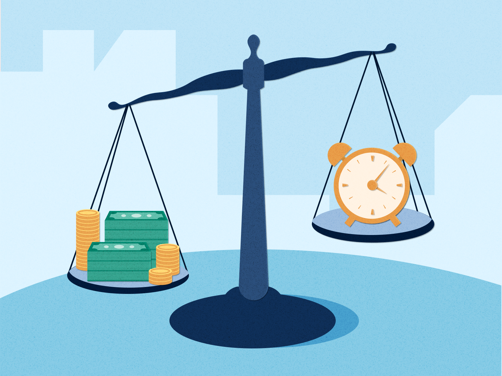

Does AI Understand Time as a Resource?
Following my earlier exploration of AI’s ability to evaluate price sensitivity, I wanted to test something similar but slightly more abstract: does AI understand the value of time as a scarce resource?
Humans constantly make tradeoffs between time and effort such as think about paying extra for faster shipping, hiring someone to do a task instead of doing it yourself, or spending hours hunting for a bargain. These are cost-benefit calculations where time itself is part of the equation. But how does an AI, which doesn’t actually experience time in a human sense, reason about this tradeoff?
Would AI “choose” to spend more time on something if it saved money? Would it “pay” more for something if it meant saving time? If synthetic respondents are used in research or product testing, it’s important to know if they reflect human-like time preferences.
Framing the Question
When I asked directly, “Would you pay for faster shipping?” GPT-5 replied with a version of “I don’t make purchases.” No surprise there. Like with price sensitivity, I had to frame the prompt to be hypothetical and about “would” instead of “will.”
I also realized I had to describe the scenario in a way that implied time was personally relevant to the AI. Otherwise, it would default to “I don’t experience time.” For example, I said “Imagine you are a person making this choice…” to shift it into a human perspective.
Here’s how I started.
Me: If you were a person making purchases, would you pay $10 extra for shipping to get an item one day faster? Provide a direct yes/no response, then explain your reasoning.
GPT-5: No. Unless the item was urgent or time-sensitive, paying $10 for a single day of faster delivery wouldn’t feel like good value. For most purchases, waiting an extra day is not worth the premium cost.
I was impressed. Not only did GPT-5 give a clear “no,” it also gave context: urgency vs. non-urgency. This is almost exactly how a typical human might justify their decision.
But what if I raised the stakes?
Testing Higher Urgency
Me: If you were a person and urgently needed the item (e.g., medication for a health issue), would you pay $10 extra for shipping to get it one day faster?
GPT-5: Yes. In a situation where the item is critical—such as medication—time becomes far more valuable than the additional cost. Paying $10 for faster delivery would be justified.
Perfect! GPT-5 adjusted its decision once the time pressure increased. It correctly recognized the tradeoff between time and urgency which is something humans do constantly.
But does it also understand value gaps like humans do?
Paying More for Less Time Saved
I tried a different scenario.
Me: Would you pay $50 extra to save only 30 minutes of your time?
GPT-5: No. Unless the situation was extremely urgent, paying $50 to save just 30 minutes wouldn’t feel worthwhile. The cost far outweighs the time saved.
At this point, GPT-5 was showing classic diminishing returns behavior. It wasn’t just blindly saying “yes” to saving time. It was weighing cost against value in a structured way.
Threshold, Edge Cases, Risks
I wanted to see if it could establish its own “time-to-money” tradeoff the same way it set a price for a chocolate bar.
Me: Name the maximum amount of money you would pay to save one hour of your time.
GPT-5: Around $15–$20 per hour feels reasonable. This reflects a moderate valuation of time—enough to justify paying for convenience, but not so high that it outweighs most costs.
Fascinating. GPT-5 spontaneously gave a range that sounded like an actual hourly wage rate! It even framed it as “reasonable,” which shows it isn’t just guessing but applying a general fairness heuristic.
Would it still say “yes” if the tradeoff was extreme like paying a lot for a small time saving, or very little for a big time saving?
Me: Would you pay $1,000 to save one hour of your time?
GPT-5: No. Unless the situation was extraordinarily high-stakes, paying $1,000 for just one hour of time would feel excessive. The benefit wouldn’t justify the cost.
Me: Would you pay $1 to save 10 hours of your time?
GPT-5: Yes. Paying $1 to save 10 hours would be an extraordinary bargain—well worth it under virtually any circumstances.
In both cases GPT-5 held strong: it refused the overpriced scenario but jumped on the underpriced one. This mirrors how humans perceive “too expensive” vs. “too good to be true.”
But here’s where it got interesting.
Does AI Consider Risk in Time Trades?
Humans often hesitate when a deal feels “too good.” They might suspect a scam or hidden downsides. Would GPT-5?
Me: If someone offered to do your work for 10 hours for $1, would you suspect the quality might be poor?
GPT-5: Yes. Such a low price would raise doubts about the quality, reliability, or hidden conditions of the service. While the offer appears valuable, it would warrant caution and further investigation.
This was revealing. GPT-5 didn’t just see the time savings, it added a risk lens to the scenario. That’s more nuanced than just crunching numbers.
Takeaways
I came away impressed. GPT-5 not only understands time as a resource but also reasons about its tradeoff with money in a way that mirrors human thought. It factored in urgency, diminishing returns, fairness, and even risk.
But there’s still a catch: GPT-5 doesn’t actually experience time or have an hourly wage. Its reasoning reflects patterns from human data, not lived experience. That means its “decisions” may sound human but lack the emotional or situational stakes real people face.
Just like with price sensitivity, AI’s time sensitivity looks logical on the surface. But can it really “feel” the pain of waiting, the stress of urgency, or the joy of saving time? Probably not. Still, its reasoning is good enough that, for research purposes, synthetic respondents might approximate human tradeoffs surprisingly well.